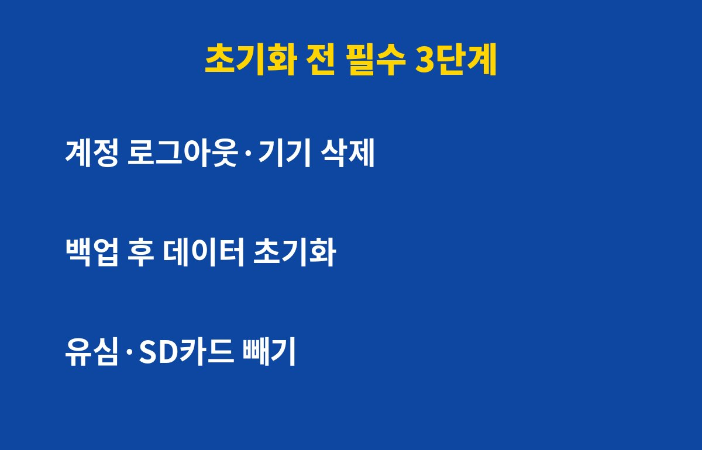
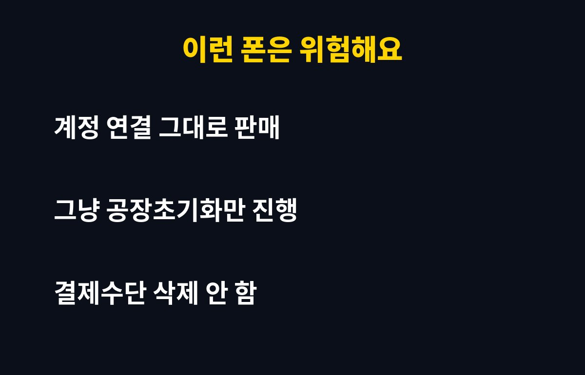

중고폰 초기화는 계정 로그아웃, 백업, 초기화 이 3가지를 순서대로 해야 개인정보가 안전해요. 폰을 팔았거나 팔 계획이라면 꼭 읽어보세요.
그런데 공장초기화 버튼만 누르면 오히려 문제가 생길 수 있어요. 이유는 아래에 있어요.
공장초기화만 누르면 끝일까요?
많은 분이 설정에서 초기화 버튼만 누르면 된다고 생각해요. 하지만 구글이나 애플 계정이 연결된 상태로 넘기면 상대방이 폰을 쓰지 못하거나, 반대로 내 계정 정보가 남을 수 있어요.
그래서 초기화 전에 계정부터 정리하는 게 순서예요. 이 순서를 바꾸면 나중에 되돌리기가 번거로워요.

중고폰 초기화, 초기화 전에 꼭 해야 하는 3가지는 뭘까요?
첫째, 계정 로그아웃과 기기 삭제예요. 구글 계정, 삼성 계정, 애플 ID에서 이 폰을 목록에서 지워두세요. 아이폰은 '나의 찾기'도 꼭 꺼야 해요.
둘째, 백업이에요. 사진, 연락처, 카카오톡 대화는 클라우드나 PC에 먼저 옮겨두세요. 카카오톡은 대화 백업을 따로 해야 하는 경우가 많아요.
셋째, 결제 수단과 간편결제 앱 정리예요. 은행 앱, 페이 앱, 인증서를 먼저 삭제하거나 해지해두면 안심이에요.
| 단계 | 할 일 | 놓치면 |
| 1 | 계정 로그아웃·기기 삭제 | 상대가 폰을 못 쓰거나 내 정보 노출 |
| 2 | 사진·대화 백업 | 추억 데이터 영구 삭제 |
| 3 | 결제·인증 앱 정리 후 초기화 | 결제 정보 잔존 위험 |
중고폰 초기화, 초기화하고 나서 확인할 건 없을까요?
초기화가 끝나면 처음 설정 화면이 뜨는지 확인하세요. 그 화면이 나오면 정상이에요. 유심과 SD카드는 반드시 빼두세요.

중고폰 초기화, 이미 팔았는데 안 했다면 어떡하죠?
괜찮아요. 지금이라도 구글·애플 계정 사이트에 접속해서 해당 기기를 목록에서 제거하세요. 비밀번호도 바꿔두면 더 안전해요. 원격으로 기기 초기화 요청을 보낼 수 있는 경우도 있어요.
폰은 팔면 끝이 아니라, 내 정보가 남지 않았는지까지 확인해야 진짜 끝이에요. 도움이 됐다면 구독해서 다음 생활 IT 꿀팁도 받아보세요.
기사·공식 발표 기준이며 출시·가격 정보는 바뀔 수 있어요.